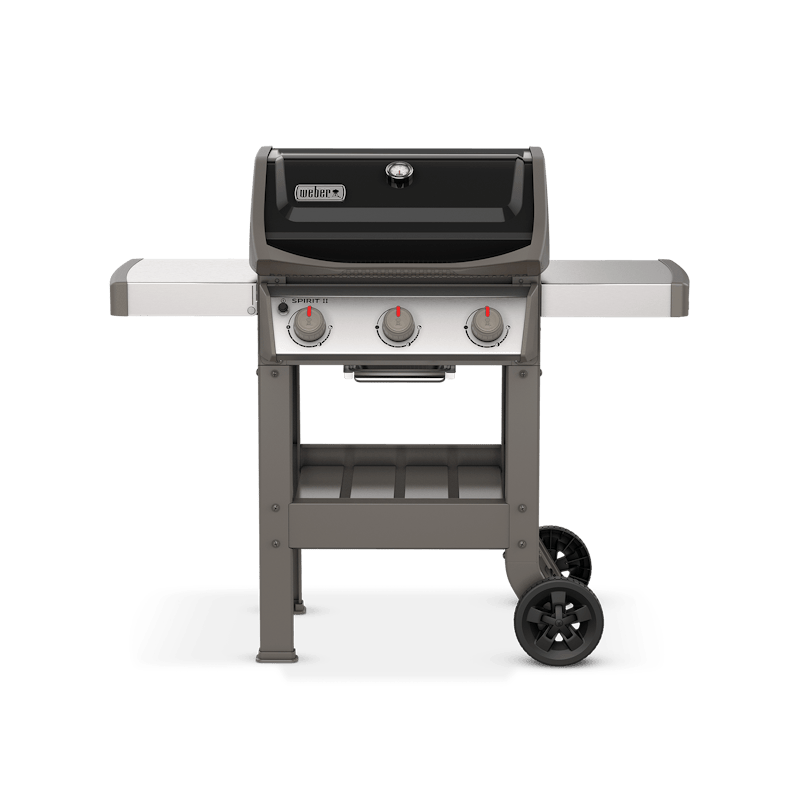
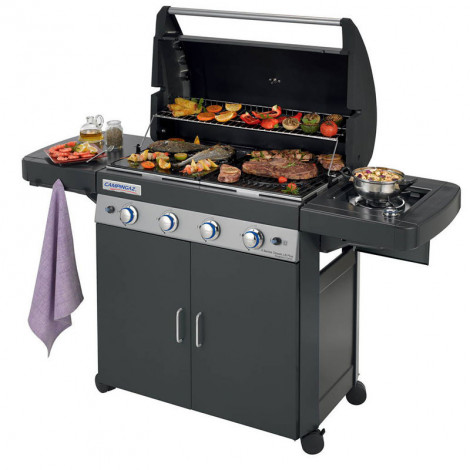
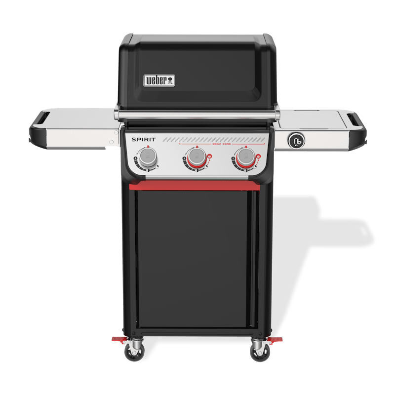
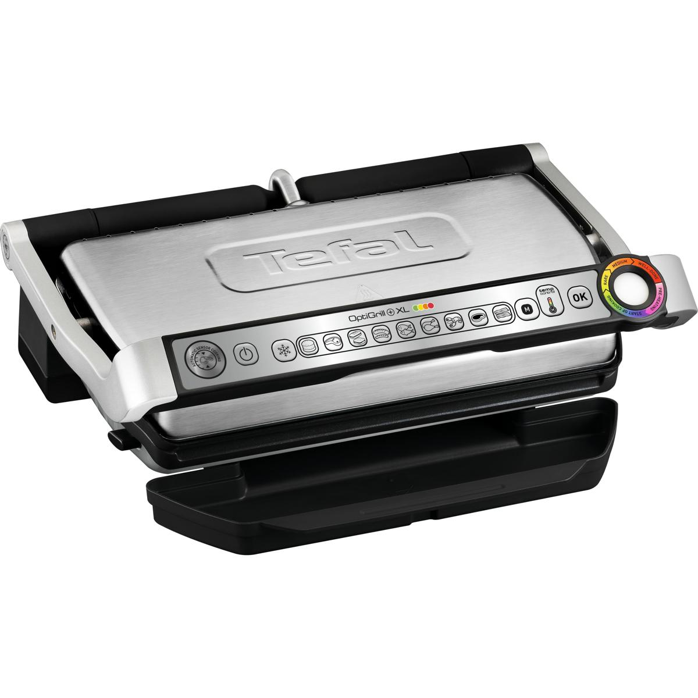
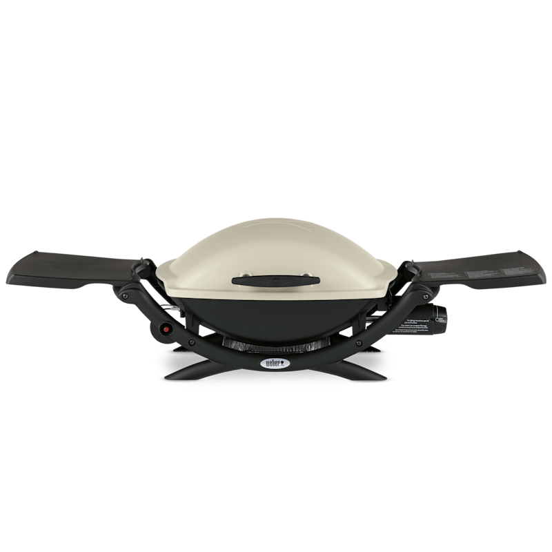

Análisis honesto basado en miles de reseñas de compradores. Las mejores barbacoas de gas, carbón y eléctricas para el verano 2026.
Ver Comparativa Completa →
Ideal para: Familias y aficionados a la parrilla que buscan calidad profesional
🎯 Para quién es: Si haces parrilladas semanales para 4-6 personas y valoras la durabilidad, esta es tu barbacoa. Si solo usas 2-3 veces al año o necesitas más espacio, hay opciones más económicas o grandes.

Ideal para: Reuniones grandes y parrilladas frecuentes con amigos
🎯 Para quién es: Perfecta si haces parrilladas para grupos grandes y buscas la mejor relación precio-superficie. Si priorizas durabilidad de décadas, invierte más en Weber.

Ideal para: Camping, playa, terraza pequeña y viajes
🎯 Para quién es: Imprescindible si te gusta el sabor de carbón y necesitas movilidad. Para uso frecuente en casa, considera una de gas más grande.

Ideal para: Pisos sin terraza, cocina interior y uso diario
🎯 Para quién es: Ideal si vives en piso sin terraza o quieres algo rápido sin complicaciones. No esperes el sabor de barbacoa tradicional, pero los resultados son consistentes.

Ideal para: Puristas del sabor a carbón y terrazas medianas
🎯 Para quién es: La elección de los puristas. Si tienes terraza y tiempo para disfrutar del proceso, no hay barbacoa de carbón más icónica y fiable.
| Producto | Precio | Valoración | Ideal Para | Link |
|---|---|---|---|---|
| Weber Spirit II E-310 GBS TOP #1 |
549€ | ★★★★☆ | Familias y aficionados a la parrilla que buscan calidad profesional | Ver → |
| Campingaz 4 Series Classic LS Plus MEJOR PRECIO |
279€ | ★★★★☆ | Reuniones grandes y parrilladas frecuentes con amigos | Ver → |
| Weber Go-Anywhere Carbón PORTÁTIL |
89€ | ★★★★☆ | Camping, playa, terraza pequeña y viajes | Ver → |
| Tefal Optigrill+ XL GC722D ELÉCTRICA |
149€ | ★★★★☆ | Pisos sin terraza, cocina interior y uso diario | Ver → |
| Weber Kettle Original 57cm CARBÓN CLÁSICO |
199€ | ★★★★☆ | Puristas del sabor a carbón y terrazas medianas | Ver → |
Depende de tus prioridades. El gas gana en comodidad: enciende en segundos, controlas la temperatura con precisión, y limpiar es pasar un paño. El carbón gana en sabor: produce un ahumado auténtico que el gas no logra, y la experiencia de cocinar con brasas es irremplazable para muchos. Si valoras practicidad y haces parrilladas seguidas → gas. Si buscas el mejor sabor y disfrutas el ritual → carbón. También existen combos gas-carbón, aunque suelen ser más caros.
Sí, siempre que cumplas la normativa de tu comunidad. En España, la mayoría de comunidades permiten barbacoas de gas en terrazas porque no producen chispas ni cenizas volátiles. Sin embargo, verifica:
• Que la butano/propano esté bien conectada sin fugas
• Que haya ventilación adecuada (nunca en espacios cerrados)
• La distancia mínima a paredes y techos inflamables (generalmente 1 metro)
• Normativa específica de tu comunidad de vecinos
Las eléctricas son la opción más segura para espacios reducidos, aunque el sabor no es igual.
Una barbacoa de marca premium (Weber, Napoleon, Broil King) con materiales de calidad y mantenimiento adecuado puede durar 15-25 años. Las de gama media suelen rondar los 5-10 años. Las claves para la longevidad:
• Limpieza post-uso: elimina grasa y restos de comida que causan corrosión
• Cobertura: usa funda protectora si la dejas exterior, aunque sea bajo techo
• Quita cenizas: en carbón, las cenizas retienen humedad y aceleran óxido
• Revisa quemadores: limpia los orificios tapados y cambia piezas desgastadas
• Almacenamiento invernal: si puedes, guárdala en garaje o trastero durante meses de no uso
Funcionan como plancha de cocina de alta potencia, no como barbacoa tradicional. No producen el ahumado del carbón ni el sellado intenso del gas a alta temperatura. Sin embargo, modelos como el Tefal Optigrill+ logran resultados consistentes y jugosos gracias a sensores de grosor y programas automáticos. Son perfectas si:
• Vives en piso sin terraza
• Quieres algo rápido sin encender fuego
• Cocinas para 1-3 personas
• Priorizas limpieza y comodidad sobre sabor tradicional
Para el sabor "de verdad" a barbacoa, necesitas carbón o gas con brasas/briquetas de cerámica.
Si haces parrilladas semanalmente o más, sí merece la pena. La diferencia de una Weber Spirit o Genesis no es solo la marca:
• Distribución de calor: quemadores de mayor calidad calientan uniformemente sin puntos fríos
• Materiales: acero inoxidable grueso que no se deforma ni oxida en años
• Servicio técnico: piezas de recambio disponibles 10+ años, no «descartable»
• Garantía: Weber ofrece 10 años en quemadores, 5-10 en cuerpo
• Reventa: una Weber de 5 años vale más que una barbacoa barata nueva
Si usas la barbacoa 3-4 veces al año, una gama media de 200-300€ te dará años de buen servicio sin necesidad de premium.
Rutina después de cada uso:
1. Calienta 10-15 min con tapa cerrada para carbonizar restos de comida
2. Cepilla las parrillas con cepillo de púas de acero mientras están calientes
3. Limpia barras flavorizer (Weber) o deflectores con cepillo o estropajo
4. Vacía bandeja de grasa cuando se enfríe — nunca dejes acumular
5. Limpia exterior con agua y jabón suave, seca bien
Mantenimiento mensual:
• Revisa que los quemadores no tengan orificios tapados
• Inspecciona mangueras y conexiones de gas por fugas (agua+jabón, busca burbujas)
• Limpia el interior del cuerpo con aspiradora o cepillo